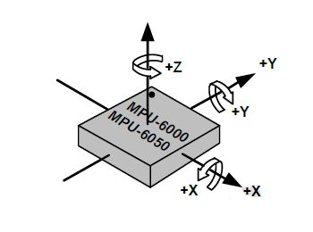
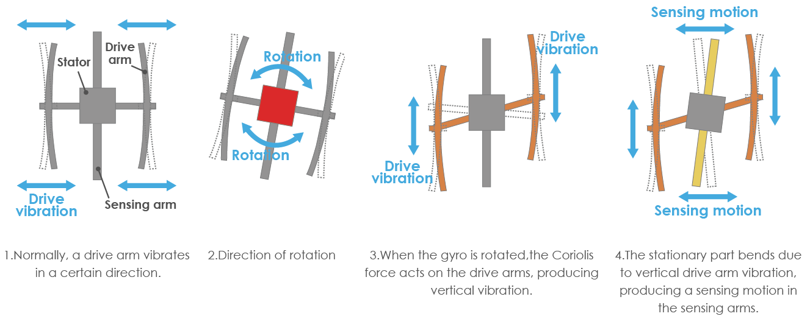
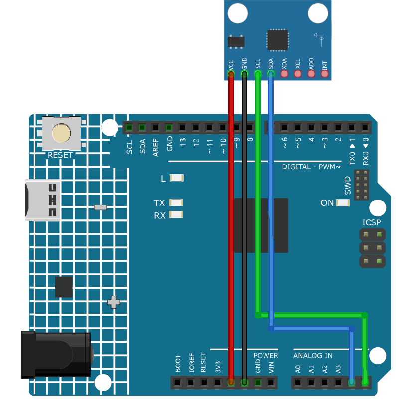

Note
Hello, welcome to the SunFounder Raspberry Pi & Arduino & ESP32 Enthusiasts Community on Facebook! Dive deeper into Raspberry Pi, Arduino, and ESP32 with fellow enthusiasts.
Why Join?
Expert Support: Solve post-sale issues and technical challenges with help from our community and team.
Learn & Share: Exchange tips and tutorials to enhance your skills.
Exclusive Previews: Get early access to new product announcements and sneak peeks.
Special Discounts: Enjoy exclusive discounts on our newest products.
Festive Promotions and Giveaways: Take part in giveaways and holiday promotions.
👉 Ready to explore and create with us? Click [here] and join today!
Accelerometer & Gyroscope Module (MPU6050)

Introduction
The MPU-6050 is a 6-axis(combines 3-axis Gyroscope, 3-axis Accelerometer) motion tracking devices.Changes in motion, acceleration and rotation can be detected.It is commonly used in robotics, gaming controllers, and other electronic devices that require motion detection. Its high accuracy and cheap cost make it very popular among the DIY community.
Principle
An MPU-650 sensor module consists of a 3-axis accelerometer and a 3-axis gyroscope.
Its three coordinate systems are defined as follows:
Put MPU6050 flat on the table, assure that the face with label is upward and a dot on this surface is on the top left corner. Then the upright direction upward is the z-axis of the chip. The direction from left to right is regarded as the X-axis. Accordingly the direction from back to front is defined as the Y-axis.


3-axis Accelerometer
The accelerometer works on the principle of piezo electric effect, the ability of certain materials to generate an electric charge in response to applied mechanical stress.
Here, imagine a cuboidal box, having a small ball inside it, like in the picture above. The walls of this box are made with piezo electric crystals. Whenever you tilt the box, the ball is forced to move in the direction of the inclination, due to gravity. The wall with which the ball collides, creates tiny piezo electric currents. There are totally, three pairs of opposite walls in a cuboid. Each pair corresponds to an axis in 3D space: X, Y and Z axes. Depending on the current produced from the piezo electric walls, we can determine the direction of inclination and its magnitude.

We can use the MPU6050 to detect its acceleration on each coordinate axis (in the stationary desktop state, the Z-axis acceleration is 1 gravity unit, and the X and Y axes are 0). If it is tilted or in a weightless/overweight condition, the corresponding reading will change.
There are four kinds of measuring ranges that can be selected programmatically: +/-2g, +/-4g, +/-8g, and +/-16g (2g by default) corresponding to each precision. Values range from -32768 to 32767.
The reading of accelerometer is converted to an acceleration value by mapping the reading from the reading range to the measuring range.
Acceleration = (Accelerometer axis raw data / 65536 * full scale Acceleration range) g
Take the X-axis as an example, when Accelerometer X axis raw data is 16384 and the range is selected as +/-2g:
Acceleration along the X axis = (16384 / 65536 * 4) g =1g
3-axis Gyroscope
Gyroscopes work on the principle of Coriolis acceleration. Imagine that there is a fork like structure, that is in constant back and forth motion. It is held in place using piezo electric crystals. Whenever, you try to tilt this arrangement, the crystals experience a force in the direction of inclination. This is caused as a result of the inertia of the moving fork. The crystals thus produce a current in consensus with the piezo electric effect, and this current is amplified.


The Gyroscope also has four kinds of measuring ranges: +/- 250, +/- 500, +/- 1000, +/- 2000. The calculation method and Acceleration are basically consistent.
The formula for converting the reading into angular velocity is as follows:
Angular velocity = (Gyroscope axis raw data / 65536 * full scale Gyroscope range) °/s
The X axis, for example, the Accelerometer X axis raw data is 16384 and ranges + / - 250°/ s:
Angular velocity along the X axis = (16384 / 65536 * 500)°/s =125°/s
Usage
Hardware components
Arduino Uno R4 or R3 board * 1
Accelerometer & Gyroscope Module(MPU6050) * 1
Jumper Wires
Circuit Assembly


Code
Note
To install the library, use the Arduino Library Manager and search for “Adafruit MPU6050” and install it.
Code explanation
The code starts by including the necessary libraries and creating an object for the MPU6050 sensor. This code uses the Adafruit_MPU6050 library, Adafruit_Sensor library, and Wire library. The
Adafruit_MPU6050library is used to interact with the MPU6050 sensor and retrieve acceleration, rotation, and temperature data. TheAdafruit_Sensorlibrary provides a common interface for various types of sensors. TheWirelibrary is used for I2C communication, which is necessary to communicate with the MPU6050 sensor.Note
To install the library, use the Arduino Library Manager and search for “Adafruit MPU6050” and install it.
#include <Adafruit_MPU6050.h> #include <Adafruit_Sensor.h> #include <Wire.h> Adafruit_MPU6050 mpu;
The
setup()function initializes the serial communication and checks if the sensor is detected. If the sensor is not found, the Arduino enters an infinite loop with a “Failed to find MPU6050 chip” message. If found, the accelerometer range, gyro range, and filter bandwidth are set, and a delay is added for stability.void setup(void) { // Initialize the serial communication Serial.begin(9600); // Check if the MPU6050 sensor is detected if (!mpu.begin()) { Serial.println("Failed to find MPU6050 chip"); while (1) { delay(10); } } Serial.println("MPU6050 Found!"); // set accelerometer range to +-8G mpu.setAccelerometerRange(MPU6050_RANGE_8_G); // set gyro range to +- 500 deg/s mpu.setGyroRange(MPU6050_RANGE_500_DEG); // set filter bandwidth to 21 Hz mpu.setFilterBandwidth(MPU6050_BAND_21_HZ); // Add a delay for stability delay(100); }
In the
loop()function, the program creates events to store the sensor readings and then retrieves the readings. The acceleration, rotation, and temperature values are then printed to the serial monitor.void loop() { // Get new sensor events with the readings sensors_event_t a, g, temp; mpu.getEvent(&a, &g, &temp); // Print out the acceleration, rotation, and temperature readings // ... // Add a delay to avoid flooding the serial monitor delay(1000); }
Additional Ideas
Visualize sensor data in graphical format on an LCD or OLED